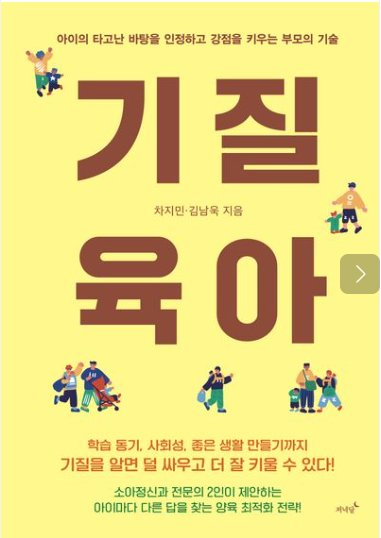

우리 아이는 지금
어느 성장 단계에 있을까요?
학습량이나 선행학습의 속도를 아이에게 맞추려면 현재 아이가 [몰입, 조절, 지속] 중 어느 단계에 머물러 있는지 파악하는 것이 중요합니다.
놀이와 흥미에 푹 빠져 호기심을 발산하고 깊이 경험하는 시기
놀이를 멈추고 규칙을 지키며 공부 태도와 습관을 형성하는 시기
어려움 앞에서도 포기하지 않고 스스로 끈기 있게 관리하는 시기
총 15문항 · 각 문항별 1점(전혀 아니다) ~ 5점(매우 그렇다) 5단계 체크
아이의 현재 성장단계 분석
-
-
-
단계별 심층 솔루션 & 실천 가이드
아이가 더 보완하면 좋은 구체적 체크 포인트 (1~3점 문항)
아래 항목들은 이번 진단에서 1~3점으로 평가된 항목들입니다. 아이에게 조급해하지 마시고 아래 가이드를 일상 속에서 하나씩 시도해 보세요.
아이의 전 문항에서 고르게 긍정적인 태도를 보여주고 있습니다. 지금처럼 아이의 자율성과 흥미를 지지해 주시면서 장기적인 목표를 함께 응원해 주세요.
• 몰입 단계: 얼마나 빨리 공부를 시작하느냐가 아니라 얼마나 깊이 몰입해본 경험이 있느냐입니다.
• 조절 단계: 공부의 양이나 난이도보다 공부를 스스로 멈추고 시작하는 습관과 태도입니다.
• 지속 단계: 타고난 능력보다 결과를 두려워하지 않고 다시 해보는 의식적인 노력과 꾸준함입니다.

더 많은 정보는 기질육아에서 확인하세요
학습 동기 · 사회성 · 좋은 생활 습관까지
“기질을 알면 덜 싸우고 더 잘 키웁니다”